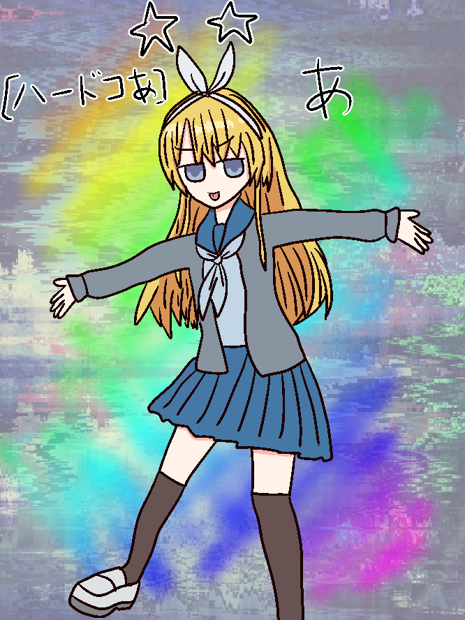

ゲーム中でこういう日記がありました↓
「あ」は、アリスウォーズという謎めいたイベントに参加するために到着した。
彼女の姿は『アリス』を思わせるものだが、その詳細は不明瞭だ。
アリスウォーズについて、「あ」の知識は限られている。
彼女が確信しているのは、このイベントのために自分がここに来たということだけ。
それ以上の詳細や、なぜ自分がここにいるのかという理由さえ、彼女には分かっていない。
「あ」は、自らに対して彼女は強い不安を抱いている。
そんな簡素で適当な名前ではアリスウォーズで勝利を収めることは難しいのではないかと考えていた。
しかし、自分の名前が「あ」である理由は、彼女は知らない。
彼女の周りには、同じように『アリス』を連想させる姿をした参加者たちが集まっている。彼女たちもまた、このイベントの真の目的や自分たちがなぜここにいるのかを理解していないようだ。
「あ」は、自分の不確かな立場と名前への不安を抱えながらも、アリスウォーズに立ち向かおうとしていた……。
///
アリスウォーズの戦場は混沌としていた。
「アリス」たちが入り乱れ、特に強力な者たちは次元を超えた能力や武器で戦っていた。
その中で「あ」は一つのナイフで奮闘した。
彼女の動きは素人同然で、
超常的な戦いの中では無力だった。
ほとんどの時間を身を潜めて過ごした。
しかし、次元を操るアリスと現実を歪める武器を持つアリスに追い詰められ、「あ」は絶望した。
一振りのナイフに何ができる？
時空を超えた最後の一撃が「あ」を襲う。
倒れる間際、彼女は自分の名前を恨む。
きっと、あの「アリス」たちはさぞ豪華な名前なのだろうと。
光に包まれ消失する「あ」。
彼女の敗北と共に、未知の次元への追放が始まった。
戦場に残されたアリスたちは、すぐに激しい戦いに戻っていった。
あ
名前：あ『アリスウォーズ』というソシャゲにでていたというテイの☆1ユニット。
性別：女
外見年齢：中学生ぐらい
身長：145cm
体重：中学生ぐらい
職業：☆1
出演作品：シマナガサレ v3.0
「あ」とかいう名前なのでほぼ使い捨て要員。
ついでにそんななので自主性とか人格も薄く、
「あ」しか言わずに言うことを聞いていたりした。
中にしっかりとした人格があり、バリア(メガネ)が両方壊れた時に顔を出した。
そっちはちゃんとまともに会話とかをしていた。
{kind=link}